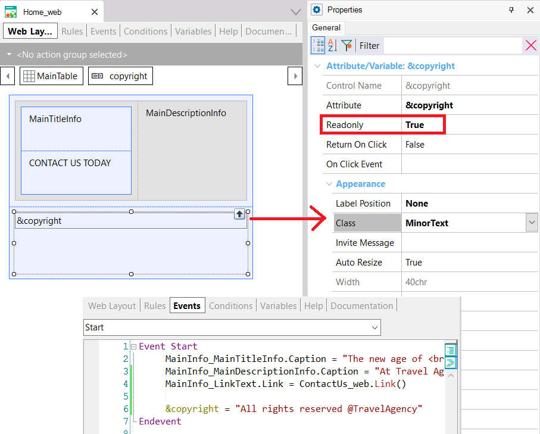
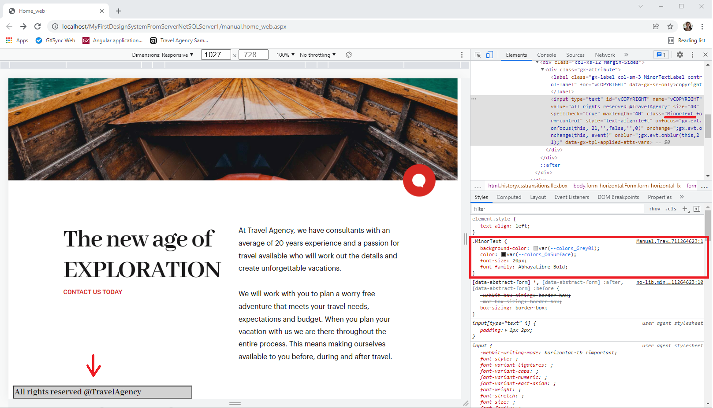
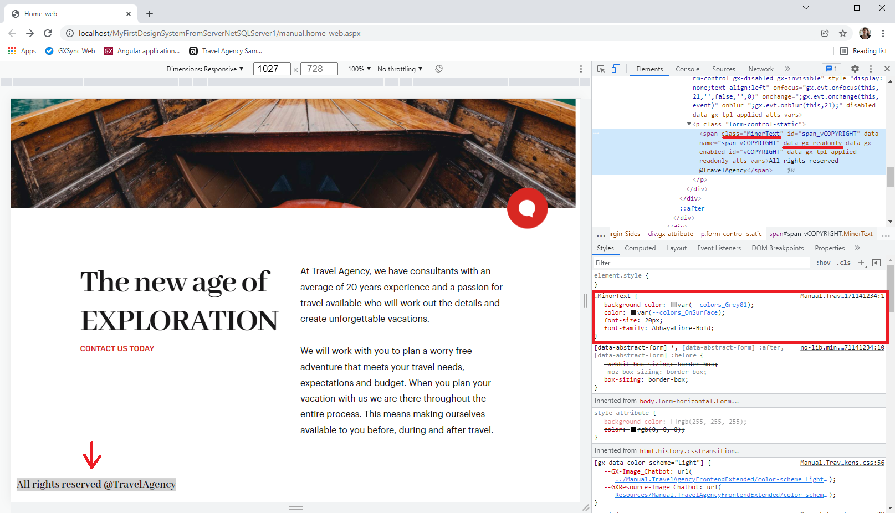
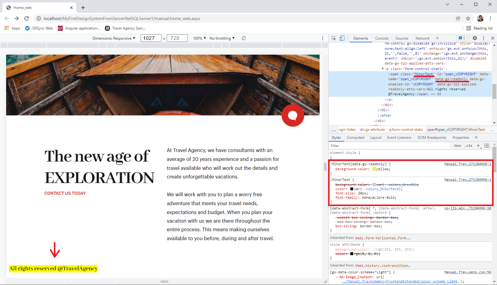

A variable has been inserted in a Web Panel to display a copyright text. To add a design, it is associated with a MinorText class to which properties are configured in the Design System Object of the Web Panel.

If in the Design System Object that class is declared as follows:
.MinorText
{
background-color: $colors.Grey01;
color: $colors.OnSurface;
font-size: 20px;
font-family: AbhayaLibre-Bold;
}
And if instead of setting the Readonly property of the Attribute/Variable control to True you leave it with its default value False, then at runtime you will see:

A border is shown for the control because it is an editable field. In fact, if you click on it you will see:
However, in this case you do not want the variable to be editable, so you will set its Readonly property to True, as shown at the beginning. You will see the following at runtime:

Note that this is the same MinorText class generated by GeneXus for the control in the HTML as before, but now with the attribute “data-gx-readonly.” That is, it is marking the element.
How can you configure that, when an Attribute/Variable control of MinorText class is readonly, the background color is yellow and not gray, and all other MinorText properties are the same?
It’s very simple. By adding to the class the gx-readonly-class property that references a new class that you will call, for example, Readonly:
.MinorText
{
background-color: $colors.Grey01;
color: $colors.OnSurface;
font-size: 20px;
font-family: AbhayaLibre-Bold;
gx-readonly-class: Readonly;
}
.Readonly
{
background-color: yellow;
}
When the control has the Readonly property set, at runtime you will see the following:

You may want to read a comparison with behavior in the Theme object, and considerations to make when converting a Theme into a DSO and vice versa.
| Backlinks | |
| Toc:Design Systems | Readonly Class Comparison between Theme and Design System Object |